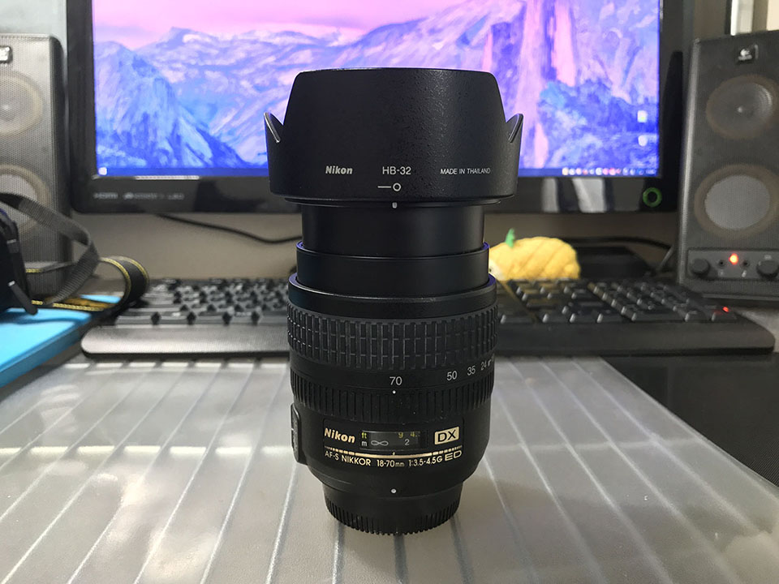
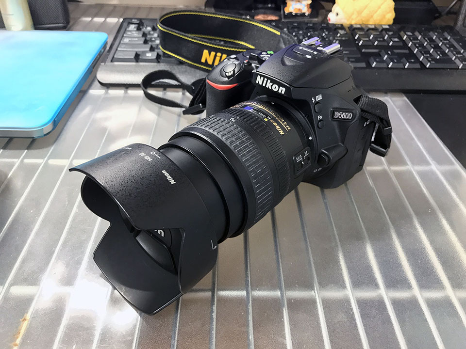
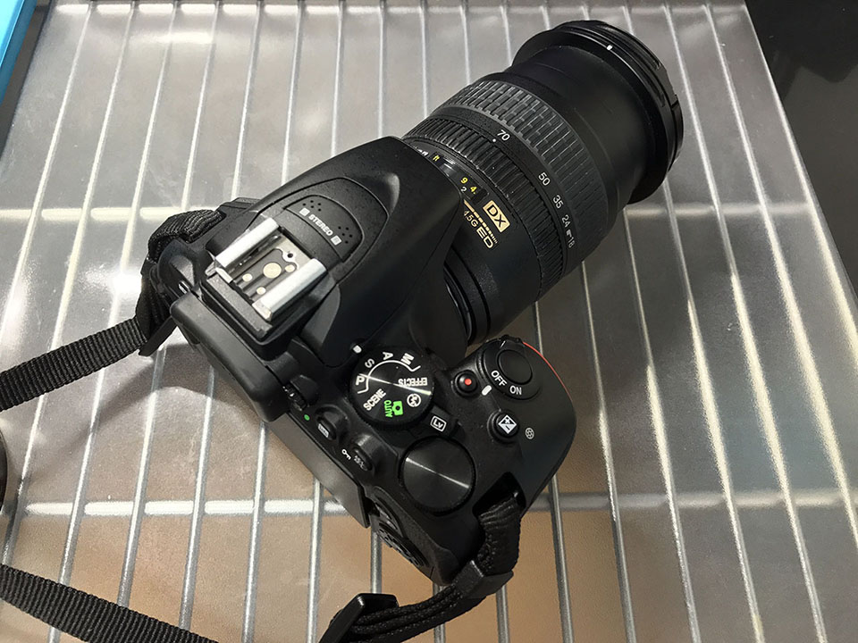

Nikon AF-S DX Zoom-Nikkor 18-70mm f/3.5-4.5G IF-ED を買った
2017年3月末頃の話になるが、Nikon AF-S DX Zoom-Nikkor 18-70mm f/3.5-4.5G IF-ED というレンズを買った。ヤフオクで中古を選び、送料込みで9000円なり。


レンズ口径は 67mm。
これまで Nikon D3100 の標準レンズ 18-55mm と、D5600 のダブルレンズ AF-P 18-55mm と70-300mm しか持っておらず、初めてセットレンズ以外のレンズを買った。
18-70mm という中望遠に差し掛かるこのレンズは、テレ側の F 値が 4.5 と明るめで、おまけに安かったので試しに買ってみた次第。
以下、撮りながら感じた特徴をば。

VR がない
お値段が安い理由は、VR が搭載されていないこと。つまり手ブレ補正がないので、その分レンズの明るさを利用してシャッタースピードを稼がなくてはならない。
その分、レンズは軽いので、サブレンズのようにして持っておくのもいいかも。
距離計窓が付いている
レンズに距離計窓が付いているので、ちょっと高級感。使いこなせてないけど。ｗ
フードも付属してるし、見た目がカッコイイってのは気分が良い。

AF はかなり速い
AF-P レンズとの比較になるとどうしても敵わないが、AF-S レンズの中ではオートフォーカスの速度はかなり速い方。もたついたり迷ったりすることもなく優秀。
それでいてフルタイム MF にもできるので、マニュアルで使いたい人もオススメ。
レンズの切り替えスイッチ類は M (マニュアル) と M/A (マニュアル優先オートフォーカス) の切り替えスイッチのみ。
暗所での撮影
VR がなく、ワイド側が F4.5 というところでいくと、夜での撮影はギリギリ。VR に頼りきっている程度の腕では、普段よりキッチリ構えてないと手ブレしてしまう。逆にこれが写真撮影時のフォームだったり、カメラ設定の練習になるところもあるかも。

撮れる写真としては、明るく写るのと、絞って撮ると標準レンズよりはシャープかな？という感じ。全体的には柔らかく写るレンズ。
キットレンズの 18-55mm だともう少し望遠が欲しいなぁ、という人が、まずとりあえず手を出してみるのであれば、値段も画質も最適なレンズだと思う。